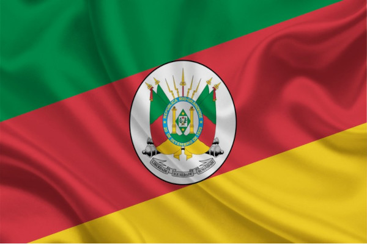

O território hoje ocupado pelo Rio Grande do Sul está entre as áreas do País que mais demoraram a receber a ocupação do colonizador português. A fronteira do estado só foi definida em 1801, com a assinatura do Tratado de Badajoz. O acordo finalizou uma série de conflitos pela posse da região. Até um século após o Descobrimento do Brasil (1500), a região ainda era ocupada principalmente por indígenas. A geografia está entre as justificativas que retardaram a colonização. Na região viviam índios gê, pampeano e os guarani. O grupo gê, também chamado de tapuia, estava na região denominada "Cima da Serra". Nesse local ainda vivem remanescentes de índios caingangues. O local é ocupado atualmente pelas cidades de Bom Jesus, Lagoa Vermelha, Passo Fundo e São Francisco de Paula. 
O povo pampeano, também chamado de charrua e minuano, vivia na região do pampa. Já os Guarani estavam na margem da Lagoa dos Patos. Os índios guarani foram os primeiros a sentir o impacto do europeu com a chegada dos padres jesuítas espanhóis em 1626. Os religiosos fundaram as Missões Guarani, abrangendo parte dos territórios hoje pertencentes ao Paraguai, Brasil, Argentina e Uruguai. Durante o século XVIII, houve intensa disputa pelo território por espanhóis e portugueses. Os espanhóis fundaram em 1726, a cidade de Montevidéu, a leste da colônia de Sacramento, fundada criada em 1680. O objetivo da fundação de Montevidéu era reduzir a influência portuguesa. Como resposta, os portugueses fundaram em 1737 o Forte de Jesus Maria José, hoje cidade de Rio Grande. A disputa terminou em 1777, quando Portugal e Espanha assinaram o Tratado de Santo Ildefonso. Pelo acordo, a colônia de Sacramento permanecia em posse de Espanha e o Rio Grande ficaria com Portugal.
Vinte e três anos após a definição das fronteiras do Rio Grande do Sul, o estado passou a receber uma leva de imigrantes alemães. A presença dos imigrantes permitiu a diversificação da economia com a instalação do modelo de estâncias agrícolas. Várias novas batalhas assolaram o território. A mais longa e sangrenta foi a Guerra dos Farrapos ocorreu entre 1835 e 1845. O estado só foi pacificado em 1928, na gestão do governador Getúlio Vargas (1882 - 1954).
Cultura do Rio Grande do Sul
A cultura gaúcha é uma das mais peculiares do Brasil. Tem uma linguagem específica, ligada ao homem de campanha, que mora no pampa. Os aspectos culturais do gaúcho repetem o que ocorreu no restante do País. Eles resultam da mistura do indígena, do negro e do colonizador português. No pampa, o gaúcho era um cavaleiro munido de laço e boleadeira. Nômade, trabalhava em fazendas de gado. Usava calças largas chamadas bombachas, que ficavam presas a botas de couro. No pescoço um lenço para suportar o frio e em torno do corpo um poncho, também com a mesma finalidade. Também para suportar o frio, o gaúcho tomava logo cedo uma cuia de chimarrão. A bebida foi herdada do povo guarani e hoje remete diretamente à região. O mate é uma bebida quente, feito à base de erva-mate refinada, o que lhe confere um gosto amargo. O mate e os trajes usados por essa figura são a perfeita tradução do povo gaúcho. Bravo e destemido, era associado a ladrões e aventureiros. A situação mudou com a Guerra dos Farrapos, quando passou a ser visto como patriota.
Churrasco
A carne assada em espetos improvisados e colocados em buracos na terra resultam no mais tradicional prato da culinária gaúcha. O churrasco também remonta à época do trabalho de fazenda em fazenda. Resulta do improviso para o preparo do alimento. A carne é temperada somente com sal grosso e assada. Os demais pratos da culinária gaúcha também remontam ao improviso do trabalhador gaúcho. Na região é servido o feijão mexido, preparado com mandioca, o quibebe; à base de abóbora; e a carne seca com mandioca. O pinhão também é bastante consumido, principalmente no inverno. A fruta seca é cozida e pode ser consumida pura ou em forma de paçoca. A influência do guarani é percebida no preparo do puchero, uma sopa encorpada, cozida com carne e legumes.
Geografia do Rio Grande do Sul
Relevo
O relevo gaúcho é formado pelo Planalto Serrano, o Pampa e a Serra Lagunar. A maioria do território está no Planalto Serrano.
Clima
O clima do Rio Grande do Sul é de influência tropical. No Planalto Serrano é subtropical de altitude. As quatro estações são bastante delimitadas e os invernos podem registrar temperaturas negativas em algumas regiões.